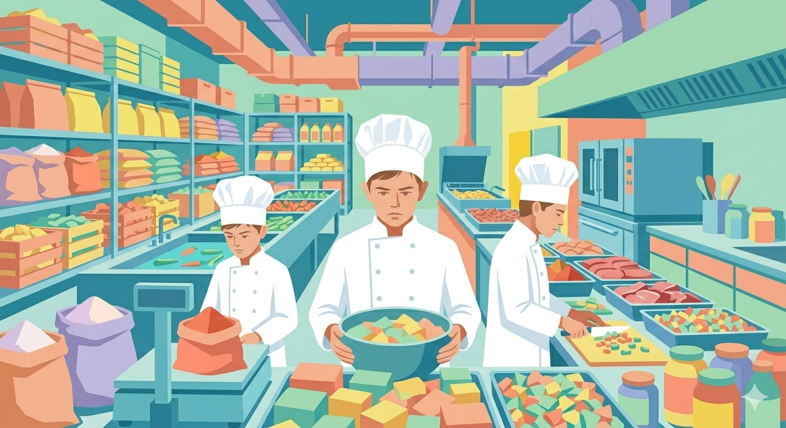

Adaptamos la producción
RETO 2 — ADAPTAMOS LA PRODUCCIÓN

¡Enhorabuena! Ya sois capaces de entender recetas y trabajar con diferentes unidades de medida. Ahora llega un nuevo problema…
La receta original estaba pensada para pocas personas, pero vuestro negocio empieza a crecer y necesitáis preparar más raciones. Además, tendréis que organizar el trabajo de cocina para ahorrar tiempo.
En este reto vais a utilizar la proporcionalidad para resolver situaciones reales.
¿Qué tenéis que hacer?
1️⃣ Adaptar la receta
La receta original está pensada para un número concreto de personas.
Debéis modificar todas las cantidades para preparar:
una versión para 8 personas,
y otra para 60 personas.
Tendréis que calcular correctamente las nuevas cantidades de cada ingrediente.
2️⃣ Explicar cómo lo habéis calculado
No basta con escribir los resultados.
Debéis explicar
- qué operaciones habéis realizado,
- qué método habéis usado, y por qué.
Podéis utilizar: regla de tres, factores multiplicadores, tablas, o cualquier procedimiento matemático correcto.
Importante
✅ Revisad bien las unidades.
✅ Explicad vuestro razonamiento paso a paso.
✅ Pensad antes de calcular.
✅ Comprobad si los resultados tienen sentido.
¿Qué se valorará?
- Corrección de los cálculos
- Comprensión de la proporcionalidad
- Explicaciones claras
- Organización del trabajo
- Participación del grupo
¿Qué debo entregar?
Una infografía o diapositiva (o varias) con:
- Las cantidades de la receta original, indicando las raciones que se obtienen
- Las cantidades para 8 raciones
- Las cantidades para 60 raciones
- Los cálculos realizados (al menos un ejemplo de un ingrediente en las dos transformaciones).